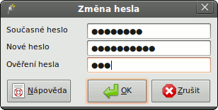

Změna hesla

Pokud chcete změnit své heslo, postupujte následovně:
- Zadejte své současné heslo do textového pole Současné heslo.
- Zadejte své vytoužené heslo do textového pole Nové heslo.
- Zadejte své vytoužené heslo znovu, tentokrát do textového pole Ověření hesla.
- Klikněte na tlačítko OK.
Dobrá praxe
Správná politika je chránit svá data heslem i v „bezpečném“ prostředí, např. doma. A pokud opomenete na ochranu
heslem v práci, můžete se zadělat na problémy od zaměstnavatele kvůli nedostatečné ochraně dat.
pgAdmin sice nevynucuje, jak má heslo vypadat, ale doporučujeme vám dodržet následují pravidla při výběru hesla.
Ani toto však není vyčerpávající návod a negarantuje absolutní bezpečnost.
- Zajistěte dostatečnou délku hesla, 6 znaků je naprosté minimum.
- Zajistěte, aby heslo nešlo jednoduše uhádnout ostatními a nebylo otevřené slovníkovému útoku. Použijte směs
velkých a malých písmen a číslic, vyvarujte se použití slov a jmen. Jednoduchý postup je třeba použít první
písmena slov nějaké fráze, kterou si pamatujete (např. básničky).
- Zajistěte pravidelnou změnu hesla, nejméně každé 3 měsíce.